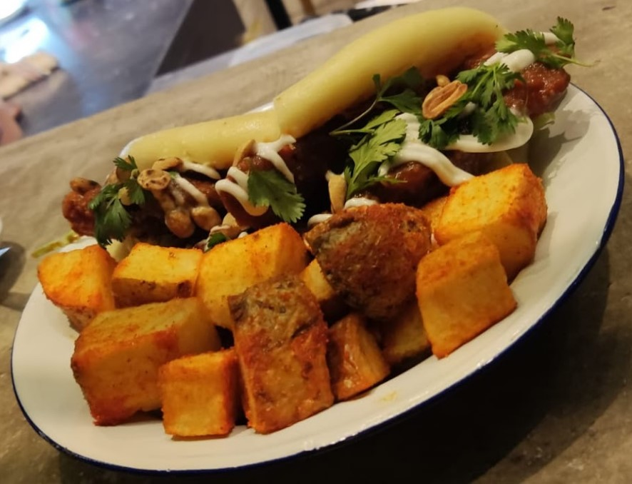
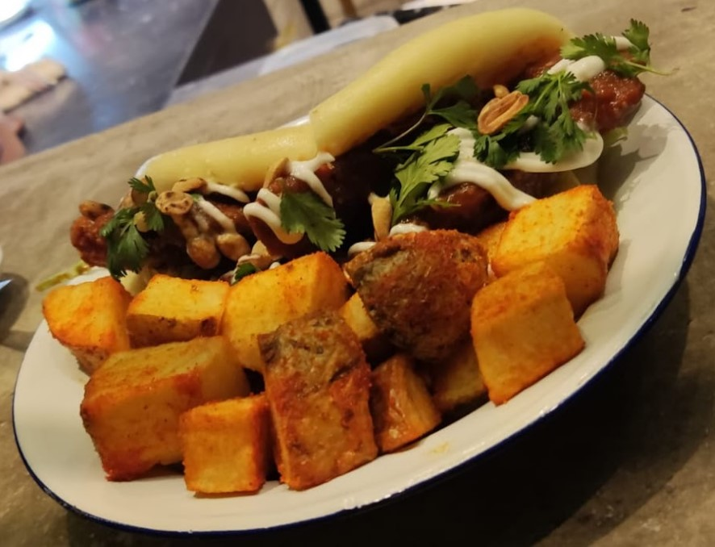
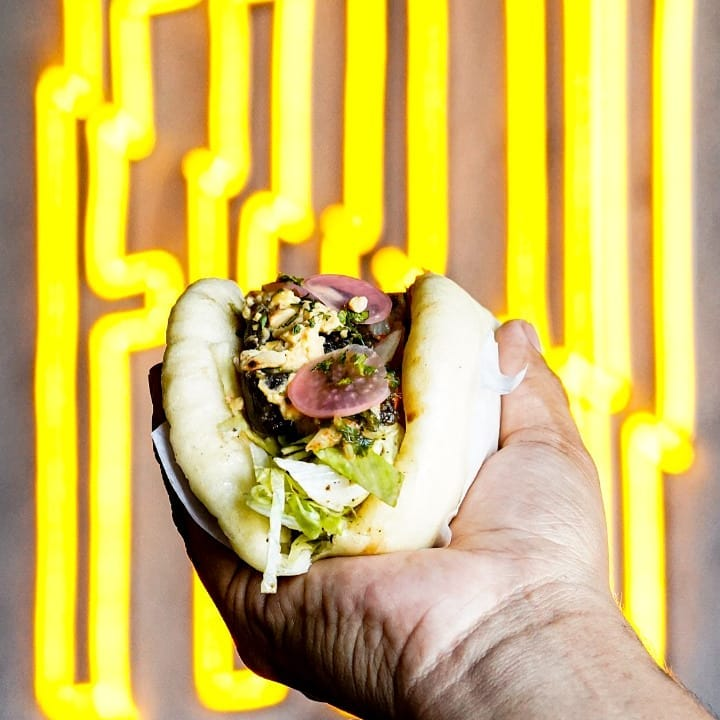
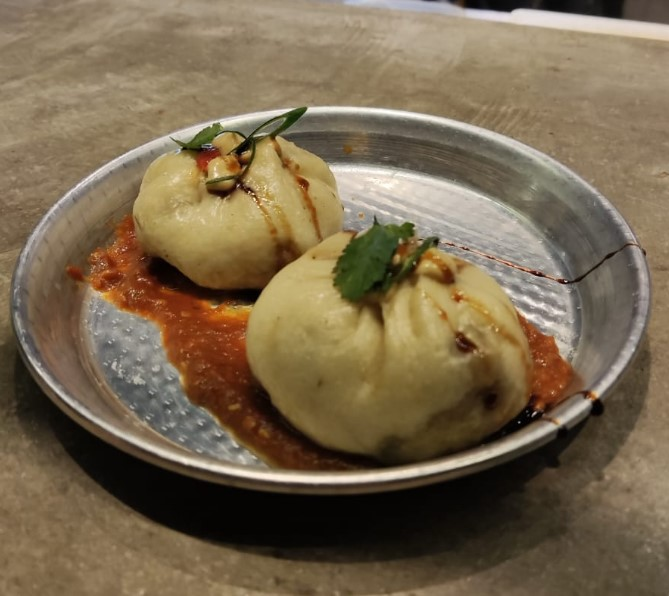
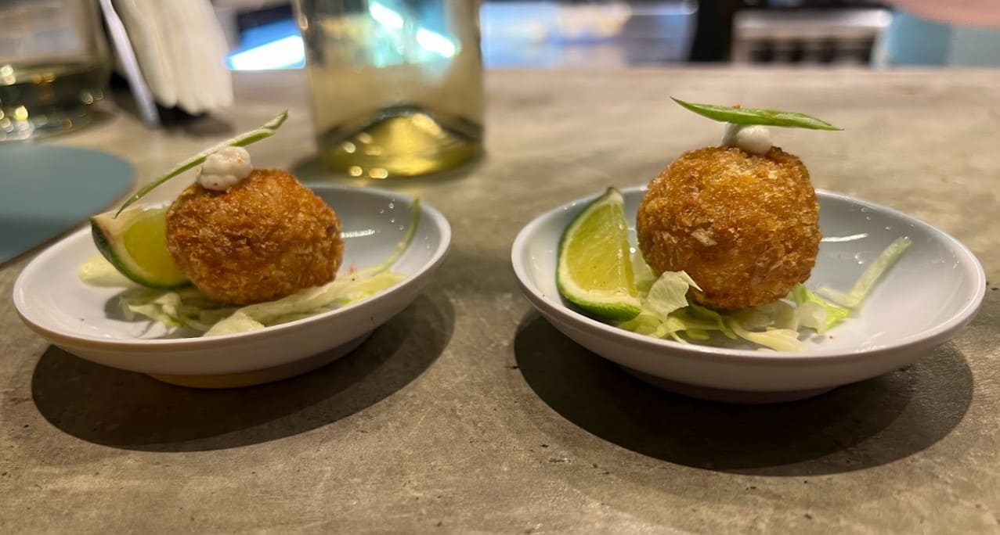
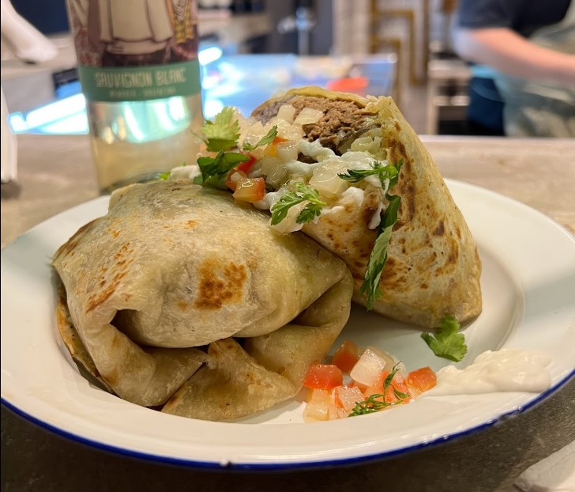
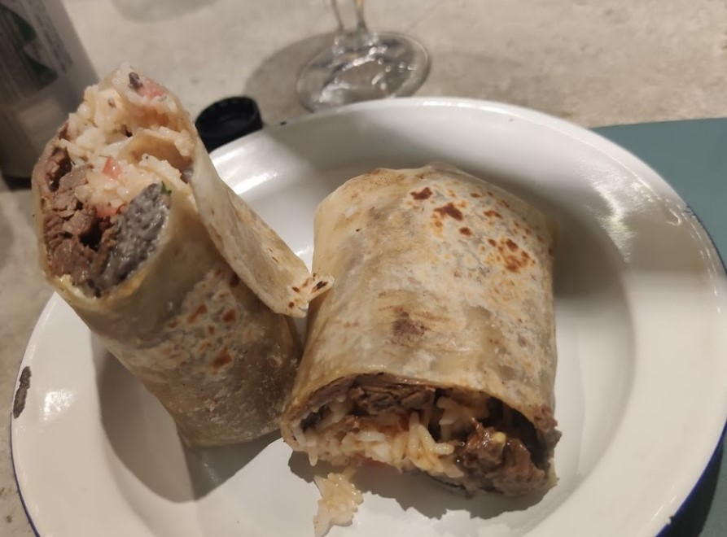
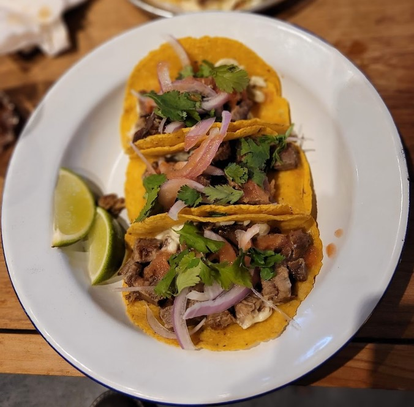
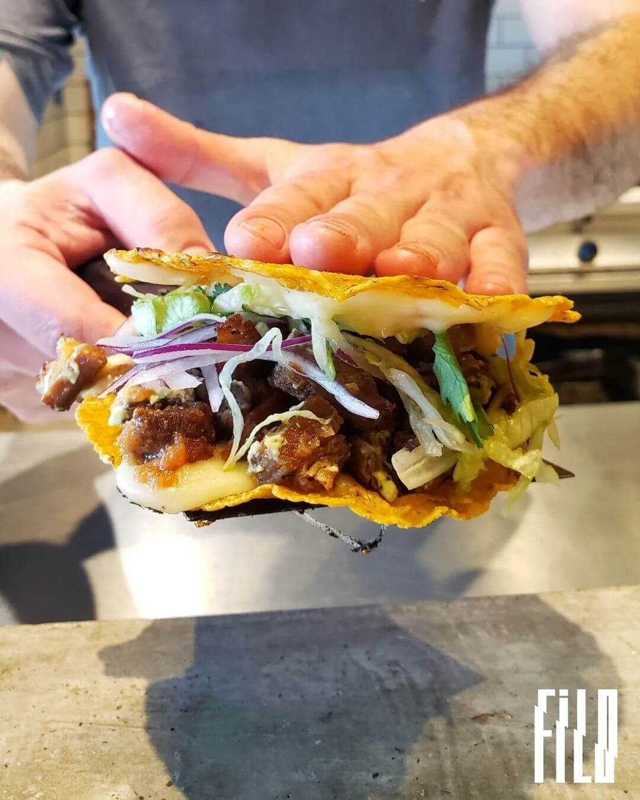

Pollo coreano
Pan cocido al vapor de origen asiático relleno con pollo frito, cilantro, mani tostado, repollada, kimchi y barbacoa oriental, junto con una guarnición de papas FILO.



Pan cocido al vapor de origen asiático relleno con pollo frito, cilantro, mani tostado, repollada, kimchi y barbacoa oriental, junto con una guarnición de papas FILO.
Pan cocido al vapor de origen asiático relleno con berenjenas chinas, rabanitos encurtidos, lechuga repollada, frijoles refritos y cebolla morada, junto con una guarnición de papas FILO.
Dumplin al vapor relleno con cerdo laqueado en soja y anís.
Lanza de masa de pan relleno con lomo saltado, salsa de ostras, soja, jengibre y ajo.
Croquetas rellenas con calamares salteados y salsa bechamel(salsa blanca bien espesa, de origen frances e italiano.).
Variante del taco, tortilla envuelta rellena de pollo coreano, lechuga repollada, frijoles, refritos, rabanitos, encurtidos, cebolla morada.
Variante del taco, tortilla envuelta rellena de berenjenas chinas, rabanitos encurtidos, lechuga repollada, frijoles refritos, cebolla morada.
Ensalada de pollo coreano, hummus, rabanitos, encurtidos, repollada, arroz, palta, verdeo, mani.
Ensalada de berenjena china, hummus, rabanitos encurtidos,repollada, arroz, palta, verdeo, mani.
Tortilla de harina de trigo enrollada rellena de ternera brazeada, frijoles negros refritos, salsa de palta, arroz y salsa bandera.
Tortilla de harina de trigo enrollada rellena de berenjenas chinas, frijoles negros refritos, salsa de palta, arroz y salsa bandera.
Hamburguesa de medallón de carne, pan de papa, cheddar, panceta, lechuga repollada, cebolla morada, pepinillos encurtidos, salsa y papas FILO.
Hamburguesa de medallon de carne, cheddar, pan de papa, lechuga repollada, tomate fresco, cebollas, salsa y papas FILO.
Tacos de matambre de ternera confitado, cebolla morada, cilantro, tortilla de maiz y salsa taquera.
Tacos de matambre de ternera confitado, guacamole, doble tortilla de maiz, cebolla, cilantro, lechuga repollada.
